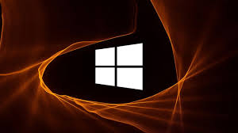

Windows 10 é um sistema operacional para dispositivos computacionais produzido pela empresa Microsoft lançamento oficialmente em 2015, uma
versão do Microsoft Windows, uma série de sistemas operativos comercializados pela Microsoft. Foi o sucessor da edição Windows 8.1. O Windows
10 foi disponibilizado para download via MSDN e Technet como uma atualização gratuita para cópias de varejo de usuários do Windows 8 e Windows
8.1 através da Windows Store e também para usuários do Windows 7 via Windows Update no primeiro ano de lançamento.[6] O sistema recebe novas
atualizações de forma
contínua, que estão disponíveis sem custo adicional para os usuários, além de compilações de testes adicionais do Windows 10 que estão disponíveis
para os usuários do Windows Insider.
Não clique aqui virus

windows11